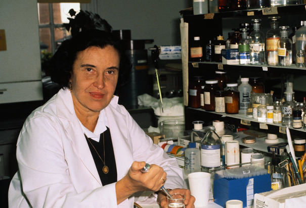

Biography
Rosalyn Yalow was very obstinate in her younger years. Her parents had her life planned out for her and she decided to take a different track. Instead of becoming a schoolmistress she decided to become a physicist. Rosalyn lived in New York for almost her entire life, except for the time she spent in graduate school at the University of Illinois. Her lower class beginning did not stop her from striving for greater. From learning to read before preschool to her study of nuclear physics in college, it was clear that she was destined for great things. In the end she was very successful at balancing her work, even winning the Nobel Prize in Physiology or Medicine, and her home life, married with two children. Yalow died in 2011 at the age of 89.
Yalow worked as a nuclear physicist and developed radioimmunoassay (RIA) working together with doctor Solomon Berson. The technology was used to prove that type 2 diabetes is caused by the body's inefficient use of insulin instead of a lack of insulin, which was previously thought. RIA works by measuring small concentrations of substances in the body, such as hormones. Insulin was tracked by injecting radioactive iodine into the patient's blood.